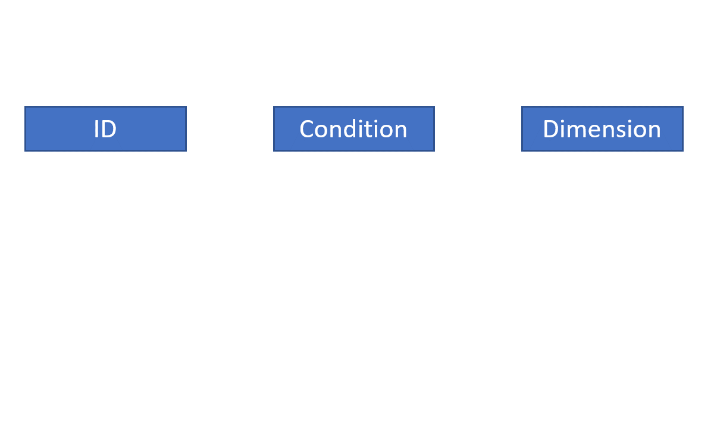

voiceR: Automating voice Analytics
voiceR is an R package that simplifies and largely automates practical voice analytics for social science research. This package offers an accessible and easy-to-use interface, including an interactive Shiny app, that simplifies the processing, extraction, analysis, and reporting of voice recording data in the behavioral and social sciences. The package includes batch processing capabilities to read and analyze multiple voice files in parallel, automates the extraction of key vocal features for further analysis, and automatically generates APA-formatted reports for typical between-group comparisons in experimental social science research.
VoiceR: Simplifying Voice Analytics for Everyone
Installation Made Easy
Getting started with voiceR is easy. Simply install the package directly from CRAN using the following command:
install.packages("voiceR")
Once installed, you’re ready to start using voiceR to analyze your voice data.
Structured File Naming
voiceR relies on a specific file naming convention to ensure seamless processing of audio files. This convention is comprised of up to three components of metadata about the file, two of which are optional:
ID: A unique identifier for the speaker or recording.
Condition (optional): The experimental condition or another grouping variable.
Dimension (optional): Additional survey or experiment information, such as additional conditions.
The different file name components should be separated by a non-alphanumeric character, such as an underscore (_).
voiceR extracts these components to provide additional information about the audios and enable comparisons between groups.
Order of the components is not important, as long as you identify the correct file name pattern structure. For example, the following file names are all valid:
12345_happy_male.wav(ID_Condition_Dimension)123bcf.wav(ID)CovidPositive_Patient1.wav(Condition_ID)
Using the Null Placeholder
If there are parts of the file name that are not any of the required components, you can use the Null placeholder to avoid them. For example, if you have additional information in the file name that does not belong to any of the categories that voiceR processes, you can use the Null placeholder to ignore that information.
For example, imagine you have a file named Audio_Participant345_Happy.wav. The Audio component of the file name is not required, so you could define the following pattern: Null_ID_Condition. This file name would still be valid, and voiceR would ignore the first component given that we used the Null placeholder.
The animated figure below demonstrates how the voiceR package uses the name pattern structure to identify the different components.

Comprehensive Functionality
voiceR offers a suite of functions designed to simplify the voice analytics process. These functions cover reading and preprocessing audio files, automatic feature extraction, visualization of results, and even automatic report generation.
Reading Multiple Audio Files: Start by using the
readAudio()function to systematically read audio files in your chosen directory. Customize the process with optional filters for specific file patterns.Preprocessing Multiple Audio Files: After importing audio files, preprocess them effortlessly using the
preprocess()function. Normalize amplitude and remove background noise with ease.Automatic Feature Extraction: Extract vital vocal features from your audio files automatically using the
autoExtract()function. Choose between analyzing files directly from a directory or using pre-imported audio files.Visualizing Results: Gain insights into your data with the
normalityPlots()andcomparisonPlots()functions. Visualize audio features’ distribution and differences across conditions or dimensions.Automatic Report Generation: Ensure thorough documentation of your findings with the
autoReport()function. Generate HTML reports with APA-formatted text, tables, and visualizations.
Explore the voiceR Shiny App
For the ultimate user-friendly experience, voiceR offers the voiceRApp() function. Launch the voiceR Shiny app to select and analyze multiple audio files effortlessly. Explore dynamic results and download comprehensive reports without writing a single line of code.
Dive Deeper into voiceR
For a detailed understanding of voiceR’s capabilities and functionalities, consult the package documentation here. Discover how voiceR can elevate your voice analytics endeavors and make exploring voice data accessible and engaging. Your journey into voice analytics starts here with voiceR.